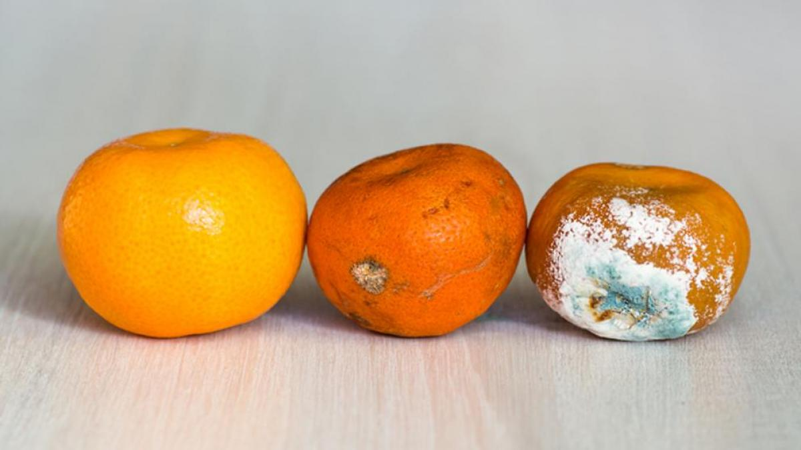

Ingredientes
- Supermercado, el que sea
- Dinero
- Ganas de ser fit y disfrutar
Elaboración
No era fruta lo siento, eso es para débiles de mente. Para ser una máquina saludable hay que
sufrir un poco y comer estos super mega conos del crossfit finess premium delux
que además si te los compras de marca blanca son baratísimos, vamos que hasta te preguntas
cómo pueden ser tan baratos, tienen que llevar algo raro, pero te da igual porque están
buenísimos, uff.
Si te esperas alguna elaboración es simplemente, abrir, comer, ya está, ahora no te
puedes quejar que es muy difícil.
Consejo
Los de fresa, chocolate y nata los mejores. Además mira como se queda la fruta, es un timo.
